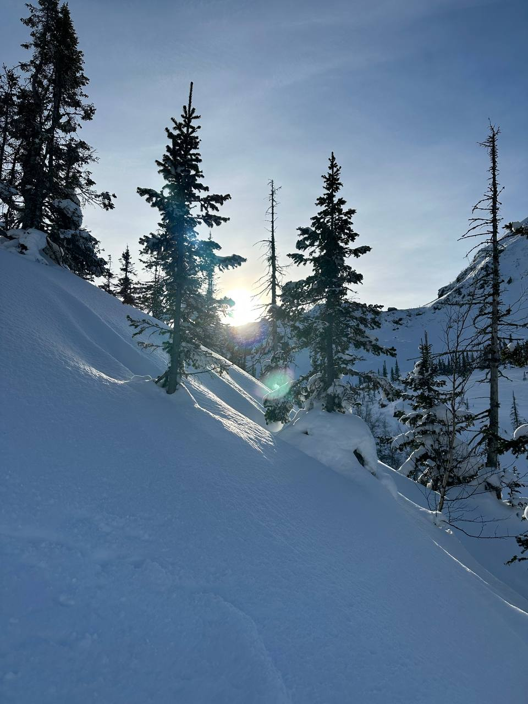

А каков же закат на Мамае?
И наконец, мой любимый момент — закат на Мамае.
Это та самая точка, которая ставит идеальное окончание дня. Солнце садится где-то за острыми пиками, и начинается настоящее светопредставление. Небо полыхает — от нежного розового до ярко-алого.
Снежные вершины в последних лучах светятся изнутри, становятся розовыми и золотыми. Воздух резко холодает, пробирает до костей, но уходить не хочется вообще.
Стоишь, смотришь на эту красоту, и просто тихо говоришь спасибо — этому месту, этому дню, этой жизни. Идеальный финал.
вернуться назад